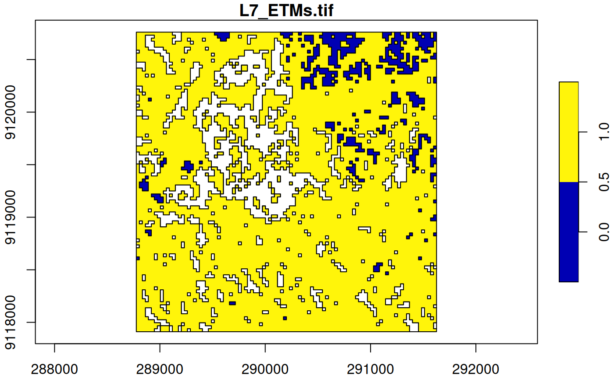

Convert stars object into an sf object
# S3 method for stars st_as_sfc(x, ..., as_points, which = seq_len(prod(dim(x)[1:2]))) # S3 method for stars st_as_sf( x, ..., as_points = FALSE, merge = FALSE, na.rm = TRUE, use_integer = is.logical(x[[1]]) || is.integer(x[[1]]), long = FALSE, connect8 = FALSE ) # S3 method for stars_proxy st_as_sf(x, ..., downsample = 0)
Arguments
| x | object of class |
|---|---|
| ... | ignored |
| as_points | logical; should cells be converted to points or to polygons? See details. |
| which | linear index of cells to keep (this argument is not recommended to be used) |
| merge | logical; if |
| na.rm | logical; should missing valued cells be removed, or also be converted to features? |
| use_integer | (relevant only if |
| long | logical; if |
| connect8 | logical; if |
| downsample | see st_as_stars |
Details
If merge is TRUE, only the first attribute is converted into an sf object. If na.rm is FALSE, areas with NA values are also written out as polygons. Note that the resulting polygons are typically invalid, and use st_make_valid to create valid polygons out of them.
Examples
tif = system.file("tif/L7_ETMs.tif", package = "stars") x = read_stars(tif) x = x[,1:100,1:100,6] # subset of a band with lower values in it x[[1]][x[[1]] < 30] = NA # set lower values to NA x[[1]] = x[[1]] < 100 # make the rest binary x #> stars object with 3 dimensions and 1 attribute #> attribute(s): #> L7_ETMs.tif #> Mode :logical #> FALSE:525 #> TRUE :7665 #> NA's :1810 #> dimension(s): #> from to offset delta refsys point values x/y #> x 1 100 288776 28.5 SIRGAS 2000 / UTM zone 25S FALSE NULL [x] #> y 1 100 9120761 -28.5 SIRGAS 2000 / UTM zone 25S FALSE NULL [y] #> band 6 6 NA NA NA NA NULL (p = st_as_sf(x)) # removes NA areas #> Simple feature collection with 8190 features and 1 field #> Geometry type: POLYGON #> Dimension: XY #> Bounding box: xmin: 288776.3 ymin: 9117911 xmax: 291626.3 ymax: 9120761 #> Projected CRS: SIRGAS 2000 / UTM zone 25S #> First 10 features: #> V1 geometry #> 1 TRUE POLYGON ((288776.3 9120761,... #> 2 TRUE POLYGON ((288804.8 9120761,... #> 3 TRUE POLYGON ((288833.3 9120761,... #> 4 TRUE POLYGON ((288861.8 9120761,... #> 5 TRUE POLYGON ((288890.3 9120761,... #> 6 TRUE POLYGON ((288918.8 9120761,... #> 7 TRUE POLYGON ((288947.3 9120761,... #> 8 TRUE POLYGON ((288975.8 9120761,... #> 9 TRUE POLYGON ((289004.3 9120761,... #> 10 TRUE POLYGON ((289032.8 9120761,... (p = st_as_sf(x[,,,1], merge = TRUE)) # glues polygons together #> Simple feature collection with 155 features and 1 field #> Geometry type: POLYGON #> Dimension: XY #> Bounding box: xmin: 288776.3 ymin: 9117911 xmax: 291626.3 ymax: 9120761 #> Projected CRS: SIRGAS 2000 / UTM zone 25S #> First 10 features: #> L7_ETMs.tif geometry #> 1 0 POLYGON ((289517.3 9120761,... #> 2 0 POLYGON ((290144.3 9120761,... #> 3 0 POLYGON ((290315.3 9120761,... #> 4 0 POLYGON ((291113.3 9120761,... #> 5 0 POLYGON ((291341.3 9120761,... #> 6 1 POLYGON ((291455.3 9120761,... #> 7 1 POLYGON ((291569.3 9120761,... #> 8 0 POLYGON ((290372.3 9120732,... #> 9 1 POLYGON ((290628.8 9120732,... #> 10 1 POLYGON ((290771.3 9120732,... all(st_is_valid(p)) # not all valid, see details #> [1] FALSE plot(p, axes = TRUE)(p = st_as_sf(x, na.rm = FALSE, merge = TRUE)) # includes polygons with NA values #> Simple feature collection with 380 features and 1 field #> Geometry type: POLYGON #> Dimension: XY #> Bounding box: xmin: 288776.3 ymin: 9117911 xmax: 291626.3 ymax: 9120761 #> Projected CRS: SIRGAS 2000 / UTM zone 25S #> First 10 features: #> L7_ETMs.tif geometry #> 1 0 POLYGON ((289517.3 9120761,... #> 2 0 POLYGON ((290144.3 9120761,... #> 3 0 POLYGON ((290315.3 9120761,... #> 4 0 POLYGON ((291113.3 9120761,... #> 5 0 POLYGON ((291341.3 9120761,... #> 6 1 POLYGON ((291455.3 9120761,... #> 7 1 POLYGON ((291569.3 9120761,... #> 8 NA POLYGON ((289745.3 9120732,... #> 9 NA POLYGON ((289830.8 9120732,... #> 10 0 POLYGON ((290372.3 9120732,... plot(p, axes = TRUE) 